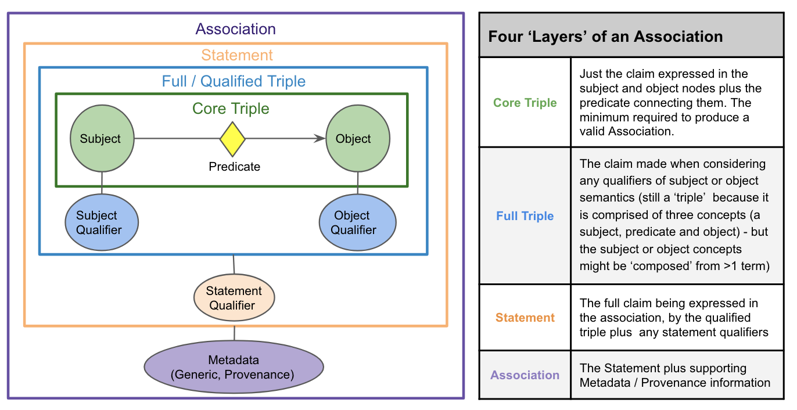

Understanding the Biolink Model
Biolink Model is a high-level data model built to provide a schema for representing biological and biomedical knowledge. The model itself is agnostic to the graph formalism used to represent knowledge. i.e. You can use Biolink Model as a schema for labelled property graphs (Neo4j) or for edge labelled graphs (RDF).
Biolink Model was built with the following aims: * Bridge between labelled property graphs and edge labelled graphs * Formal representation where the semantics are well defined within the model * Focus on the actual schema and its semantics instead of being weighed down by limitations of a technology * Extensible, self-documenting, and unambiguous * Maps to external ontologies, thesauri, controlled vocabularies, and taxonomies
To that end, Biolink Model makes use of linkML (Biolink Modeling Language) for defining the various semantics of the model.
Understanding the Biolink Modeling Language
linkML is a general purpose modeling language that follows object-oriented and ontological principles. The modeling language inherits features from the Web Ontology Language (OWL) and thus is capable of representing semantics in addition to the standard object-oriented hierarchy of a data model.
Models are authored in YAML; using linkML one can generate a variety of artifacts including JSON-Schema, OWL, RDF, Python data classes, Shape Expressions, and Markdown.
The modeling language provides the following idioms, - Class definition : Used to define classes - Slot definition : Used to define class properties - Type definition : Used to define data types - Schema definition : Used to define properties of the model itself
Refer to linkML on GitHub for a more detailed guide on LinkML.
Structure of the Model
Biolink Model is a high-level data model where entities, associations, and predicates are arranged in a hierarchy. The model also defines node properties, edge properties, and types.
The model itself is organized using linkML Class definition (class), Slot definition (slot), Type definition (type) and Schema definition.
Conventions
In Biolink Model YAML any class, slot, or type is defined in sentence case form. When this model is compiled
to various forms (like JSON-Schema, OWL, Markdown) the representation is based on the following convention,
- classes are named in CamelCase form
- slots are named in snake_case form
- types are named in snake_case form
At a glance the structure is as follows, - Classes - Entities - Associations - Mixins - Slots - Predicates - Node Properties - Edge Properties - Types
Classes
A class represents an entity or an association. A class can have one more slots (properties).
In RDF sense, a class is basically rdfs:Class.
Within the Biolink Model there are two hierarchies of classes: - Named Things - Associations
where Named Things are disjoint from Associations.
But they do share a common ancestor class: entity
Named Things
Named Things are classes that represent real world entities such as genes, diseases, chemical substances, etc. In a
graph serialization, 'Named Things' are represented by nodes in a graph. Each class in the named thing has one or
more slots (properties). The root of the "Named Things" hierarchy is the biolink:NamedThing class.
Associations
Associations are classes that represent an assertion or statement. In RDF sense, an association is an rdf:Statement.
In a graph formalism, associations are represented using edges in a graph.
Associations help us to make assertions about the world. For example, we can say that a gene is associated with a disease. Or we can say that a gene is a member of a pathway. Associations also help us constrain the meaning of an edge, or add context to the edge that describes how or when the edge takes place. In fact, we also use association objects to hold references to the publications, confidence scores, and other metadata that we use to support our assertions.
Associations are arranged in a hierarchy where the root of all Associations is the association class. In general,
Associations have three main properties (or slots):
* subject: the subject of the association
* predicate: the predicate or relationship between the subject and the object of the association
* object: the object of the association
These three properties (or slots) define what Biolink calls a "core triple".
Subjects and objects are always classes in the Biolink Model that are descendants of "biolink:NamedThing" and represent core biological, chemical, and biomedical concepts (e.g. genes, diseases, chemicals, phenotypes), whose IRIs come from community standard ontologies (e.g. HGNC, MONDO, ChEBI, HPO). As a best practice, Biolink Model prioritizes connectivity and practicality.
The predicate in an Association is always a Biolink property (or slot) that is or descends from the "biolink:related_to" property. Predicates in Biolink often are exactly equivalent to relations in the Relations Ontology.
To express more complex or nuanced Statements, we use additional slots called qualifiers that refine or extend the meaning of the core triple. At the highest level we distinguish two kinds of qualifiers: (1) node qualifiers altering the meaning of the Association subject or object specifically; (2) statement qualifiers refine or extend the meaning of the statement as a whole.
Together, the subject, predicate, object, and optional qualifier(s) comprise the full semantics of the statement that an Association puts forth as true (i.e. its ‘S-P-O-Q’ semantics). Association objects may also include slots to hold additional metadata about this core statement - primarily information about the provenance and evidence supporting it. Using these elements together we can build Associations with many possible ‘layers’ of complexity (Figure 1). Some Associations may simply consist of an S-P-O triple. Others may represent more complex statements that employ multiple qualifiers, supported by rich evidence and provenance metadata. For example, Figure 2 provides a layered view of a complex Disease to Phenotype Association instance.
Figure 1: A layered view of a simple a Biolink Association object. )
Figure 2: An Association representing the Statement that “Late Stage Ebola has phenotype Severe Bleeding with 92%
penetrance in adults”, and some provenance metadata supporting this. This representation leans heavily on qualifiers
for representing Statement semantics.

At the highest level we distinguish two kinds of qualifiers that contribute to an Association Statement: * node qualifiers (aka subject / object qualifiers) extend or refine the meaning of an Association subject or object concept; * statement qualifiers refine or extend the meaning of the core S-P-O triple as a whole.
Together, the subject, predicate, object, and optional qualifier(s) comprise the full semantics of the statement that an Association puts forth as true (i.e. its ‘S-P-O-Q’ semantics). Association objects may also include slots to hold Metadata about this core statement - primarily information about the provenance and evidence supporting it - but unlike qualifiers, this metadata does not contribute to the meaning of the core Statement itself. Using these qualifier and metadata elements together, we can build Associations with many possible ‘layers’ of complexity.
Sometimes, seeing several examples of a modeling pattern is most helpful in applying the pattern to your own data. To peruse our examples, please visit: Association Examples With Qualifiers
Please refer to Curating the Model for more information about making new Associations or making changes to existing Associations.
Mixins
Mixins are defined as a way of encouraging reuse of specific slots (properties) while ensuring a clear inheritance chain. Mixins are used to extend the properties (or slots) of a class, without changing its position in the class hierarchy. Mixins can be extremely helpful in a number of ways: * to generalize a set of attributes that can apply to classes in different parts of the class hierarchy, * reduce duplication of shared attributes between classes that do not inherit from one another * to prevent the sometimes confusing nature of multiple inheritance noted in the '[diamond problem]'(https://tinyurl.com/4zdw9tsb).
In general, while mixin slots and classes should not be directly instantiated, or used directly as a slot in a class, KGs can use them as a substitute for multiple inheritance. For example, a KG might wish to determine what are the parents of a certain class. In this case, the KG should navigate a mixin used in a domain or range of a class or slot, as it would the "is_a" demarcation.
Slots
In Biolink Model, slots represent properties that a class or an association can have.
A slot is similar to rdf:Property where it can link:
* an instance of a class to another instance of a class
* an instance of a class to a literal/data type
In Biolink Model slots are used to represent - Predicates - Node Properties - Edge Properties (aka Association Properties, subject/object/statement qualifiers)
Predicates
In a graph formalism, predicates are relationships that link two instances. In an OWL sense, predicates are
similar to owl:ObjectProperty. For example, a predicate biolink:treats can be used to link an instance of class
biolink:ChemicalEntity with an instance of class Biolink:Disease.
Node Properties
Node properties are slots that an entity class (i.e, a node) can have. The root of all node properties
is biolink:node_property slot. In an OWL sense, node properties are similar to owl:DataTypeProperty.
For example, biolink:symbol, biolink:synonym, and biolink:xref are children of the biolink:node_property slot,
and they are assigned to the entity class named thing. So all instances of this class can have biolink:symbol,
biolink:synonym, and biolink:xref as properties that further describes the instance.
Edge Properties
Edge properties are slots that an association class (i.e., an edge) can have. The root of all edge properties
is association slot slot. In an OWL sense, edge properties are similar to owl:DataTypeProperty.
For example, biolink:subject, biolink:predicate, and biolink:object are children of the biolink:association_slot slot,
and they are assigned to association class biolink:association. So all instances of this class can
have biolink:subject, biolink:predicate, and biolink:object as its properties that further describes the instance.
Types
linkML provides a handful of inbuilt data types. But you can also define custom data types using the modeling language.
In Biolink Model we have several data types.
- string
- integer
- uriorcurie
- float
- boolean
- iri type
Data types are not arranged in any hierarchy.